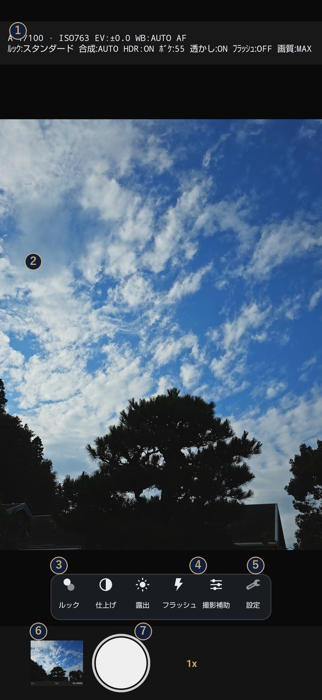
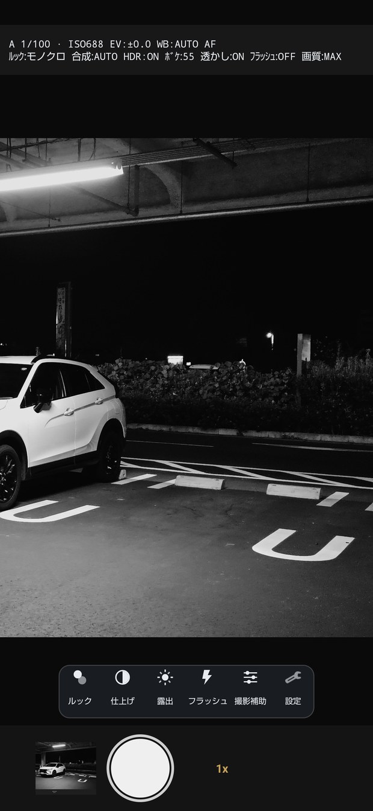
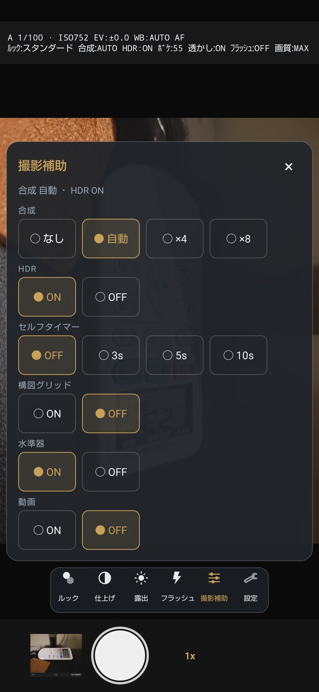

03
色を決める

ルック（21種類）
rail のルックから選びます。スタンダード・FLAT・風景・ポートレート・フィルム・モノクロなど。 選んだ瞬間にプレビューが変わるので、撮る前に決められます。
上の「ルックの効き」で、その色をどれくらい強く当てるかを ± で変えられます。 「この色は好きだけど、もう少し薄く」というときに使ってください。
仕上げ
rail の仕上げでは、彩度・明瞭度・シャープを ±0 を基準に微調整できます。 ここも、動かすとプレビューに出ます。
Guide
難しい設定をしなくても、シャッターを押すだけで写真になります。 このページは「もう少し踏み込みたくなったとき」に読むためのものです。
01

02
| タップ | そこへピントと明るさを合わせる |
|---|---|
| 長押し | そこでピントを固定する（AFロック） |
| ダブルタップ | 倍率を 1x → 2x → 4x → 1x と送る |
| ピンチ | 倍率を無段階で変える |
| 左右に払う | ルックを前後に送る（一覧を開かずに色を変えられます） |
03
rail のルックから選びます。スタンダード・FLAT・風景・ポートレート・フィルム・モノクロなど。 選んだ瞬間にプレビューが変わるので、撮る前に決められます。
上の「ルックの効き」で、その色をどれくらい強く当てるかを ± で変えられます。 「この色は好きだけど、もう少し薄く」というときに使ってください。
rail の仕上げでは、彩度・明瞭度・シャープを ±0 を基準に微調整できます。 ここも、動かすとプレビューに出ます。
04

同じ瞬間を4枚・8枚連続で撮り、位置を合わせて重ねます。 重ねるほど暗いところのザラつきが減ります。自動にしておくと、 暗さに応じて枚数を決めます。
端末が熱いとき・電池が厳しいときは、枚数を自動で減らして写真が失われないようにします。
明るさの違う3枚から、白飛びと黒つぶれを抑えた1枚を作ります。
05

設定 > 表示 > 表示モード（縦持ち） で切り替えます。
06

| 撮影 | アスペクト比、画質、シャッターの優先度、ISO上限、最低シャッター速度、AFの解除時間 |
|---|---|
| 画作り | ルック、効きの強さ、彩度・明瞭度・シャープ、HDR |
| ボケ | 背景ぼかしの強さ、ピーキング |
| 表示 | 表示モード、画面デザイン、グリッド、水準器 |
| 音 | シャッター音（3種類＋無音）、音量 |
| 保存 | 元画像も保存、RAW(DNG)、位置情報を写真に記録、透かしの内容と配置 |
| 設定 | 設定の書き出し / 読み込み、初期化 |
| アプリ | 版数、使っているライブラリ、操作ガイドをもう一度見る |
| 開発 | 診断レポート、セーフモード |
07
08
合成を「自動」にしていると、暗いほど多くの枚数を重ねます。その分だけ保存までに時間がかかります。 早さを優先したいときは、撮影補助 > 合成 を「なし」にしてください。
設定 > 撮影 の 「AFが合わないときの撮影」を「合焦を待たずに撮る」にすると、 ピントが決まらなくてもシャッターが切れます（こちらが既定です）。逆に「合焦したときだけ撮る」にしていると、 決まらなかった回は撮影を中止します。 コントラストの少ない壁や、暗すぎる被写体ではこちらが便利です。
設定 > 開発 > 診断レポート から、そのときの状況をファイルに書き出せます。 写真そのものや位置情報は入りません。落ちた直後のものが一番参考になります。 sakego.syasai@gmail.com まで、端末名と「何をしたら起きたか」を添えて送っていただけると助かります。
設定 > 設定 から初期化できます。書き出しておけば、あとで同じ設定に戻せます。